Specimen Nº 15 · Habitat III — The early internet & client work
BusPress & SalsaPress
A WordPress theme + plugin that let Bus affiliates — Montana to Nigeria — spin up sites wired into a shared Salsa database. 900+ downloads.
- First observed
- 2012
- Diet
- Salsa API keys
Customizable WordPress Theme That Makes Organizing Easy - Open Sourced for the Community, with The Oregon Bus Project
The Oregon Bus Project needed a new website - their old one just wasn't cutting it. But it couldn't just be a design refresh, a lot had changed in last few years of the organizations. Instead of using five databases to manage donor, volunteer, and event data - they now used one: SalsaLabs. And they couldn't just build one website - because the organization had expanded and grown: into new states, new programs, and new tax entities.
So BusPress was born: A customizable WordPress theme that allows any Bus anywhere in the country (Montana, Colorado, Illinois, even Nigeria) to create a youthful, flexible, and fun website in the theme of the Bus. No special HTML skills needed, just a browser, logo, and color scheme. And these sites wouldn't just look great - they would work with the Bus Federation's database (only requiring a password) and would allow direct signup of volunteers and cross posting of events.
It didn't stop there - we released SalsaPress, a plugin version of the features that powered the Bus's fleet of website. Now available, for free, to any Salsa customer anywhere in the world (which has been downloaded over 900 times of the last few years). An addon version was released a few months later to provide
BusPress and SalsaPress were both built in WordPress and PHP and integrated deeply with SalsaLab's API
Plates · from the field
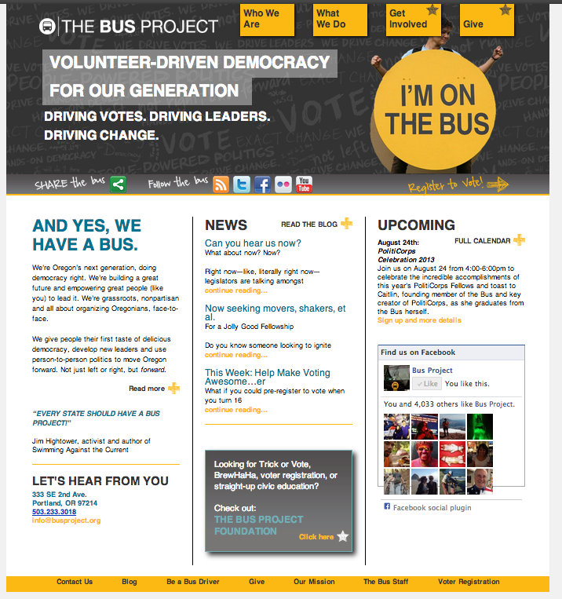
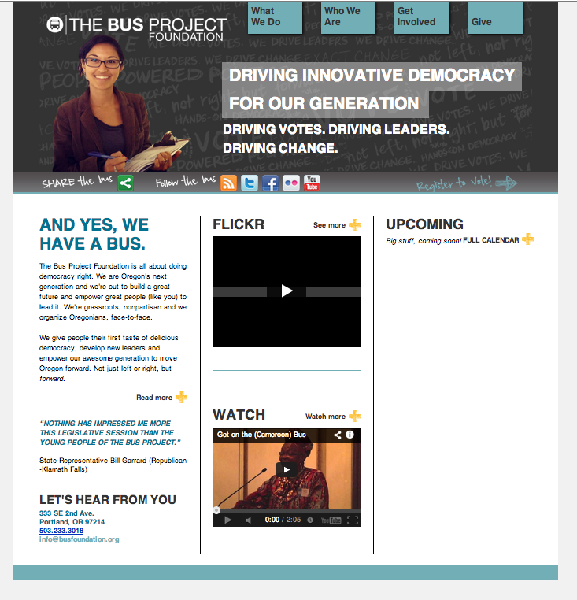
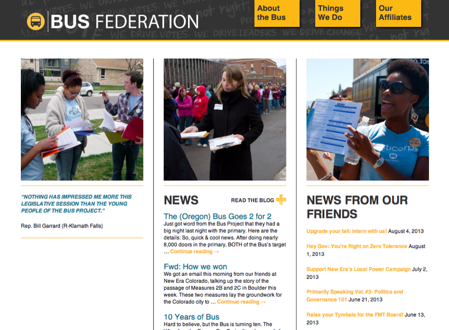
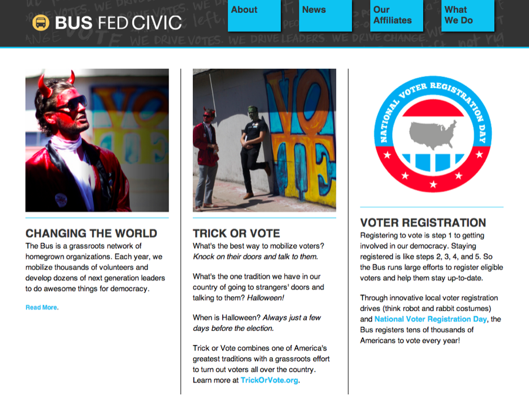
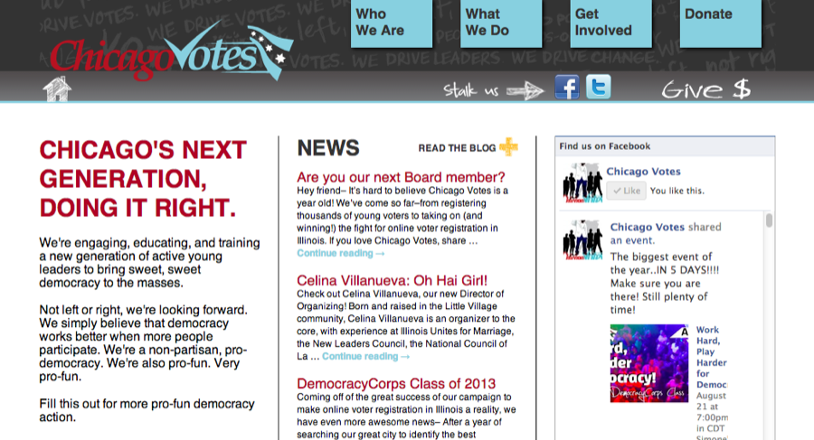
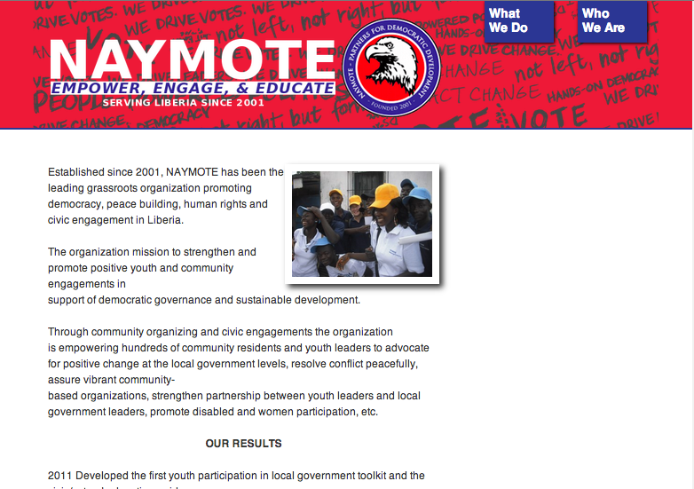
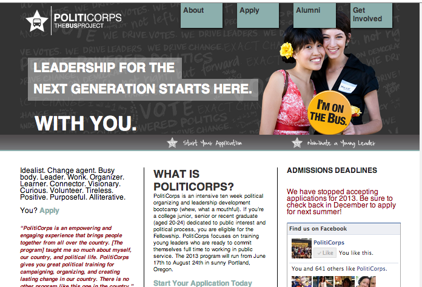
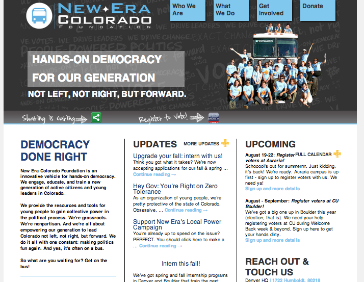
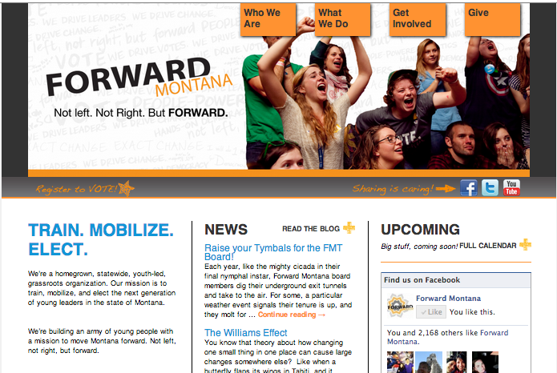
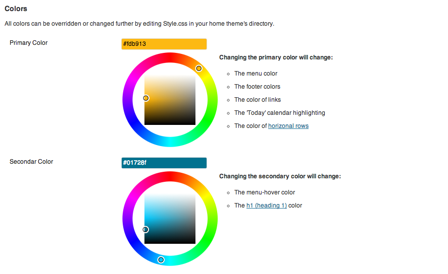
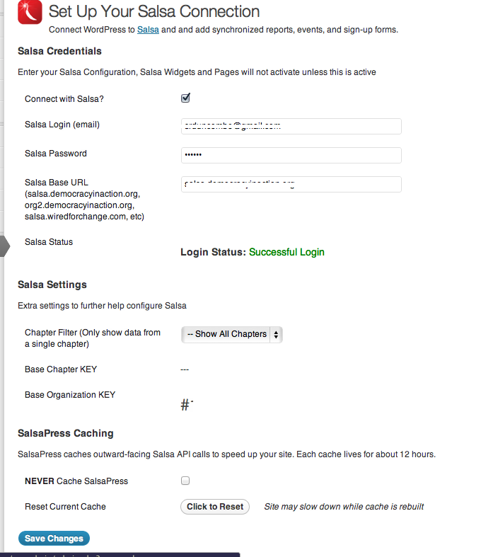
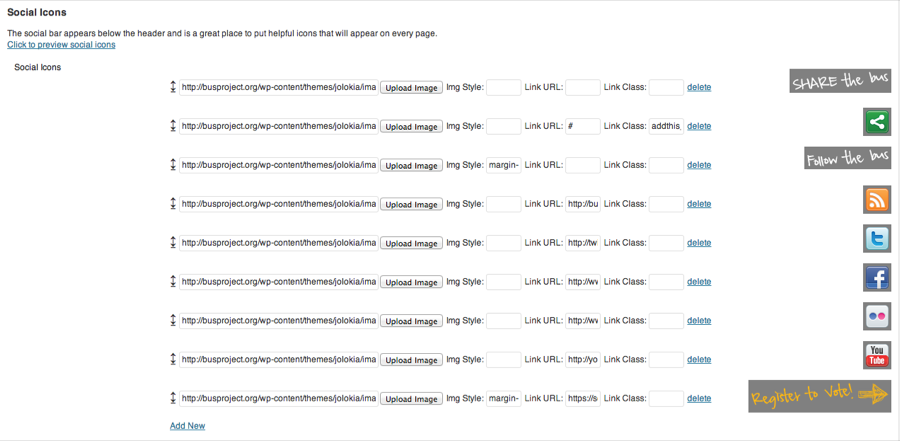
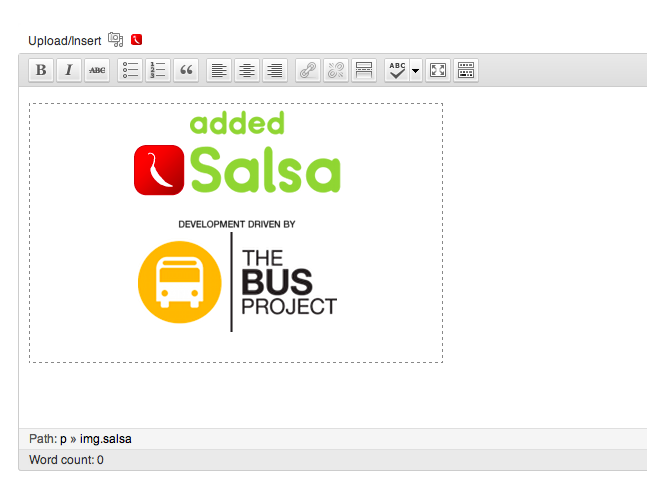
Field notes